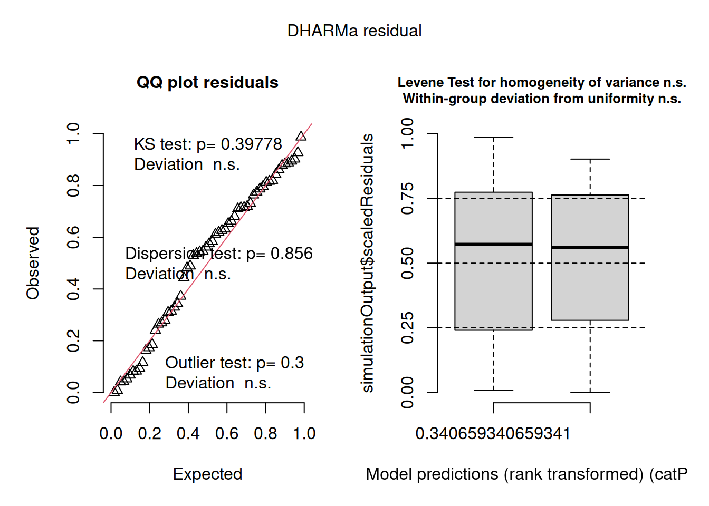
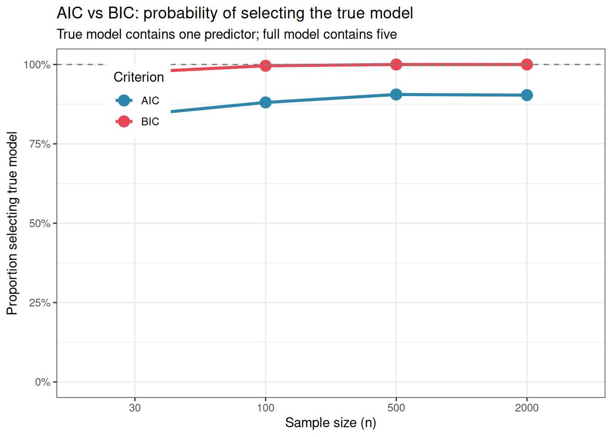

Chapter sec-assump (sec-glm-intro) introduced generalised linear models as the correct framework for non-normal responses, counts, proportions, binary outcomes, and positive continuous measurements. Chapter sec-mem introduced mixed-effects models as the correct framework for hierarchical, clustered, and repeated-measures data. Both extensions were motivated by the same underlying principle: choose a model whose structure matches the data-generating process.
Biological data frequently require both extensions simultaneously. Species abundance counts are non-negative integers (a Poisson or negative binomial response) and they are collected from plots nested within sites nested within regions. Disease incidence is a proportion (a binomial response) but patients are clustered within hospitals. Seed germination is binary (viable or non viable), but seeds are clustered within maternal plants, and maternal plants are nested within populations.
Generalised linear mixed models (GLMMs) combine the distributional flexibility of GLMs with the random effects structure of mixed models. They are the natural endpoint of the modelling journey this book has been tracing, and they are the workhorse of modern quantitative biology.
11.1 The GLMM Framework
11.1.1 The Model
A GLMM extends the GLM by adding random effects to the linear predictor:
where \(g(\cdot)\) is the link function, \(\mathbf{x}_{ij}^T \boldsymbol{\beta}\) are the fixed effects, \(\mathbf{z}_{ij}^T \mathbf{b}_j\) are the random effects (sec-matrix-notation), and \(\mathbf{b}_j \sim \mathcal{N}(\mathbf{0}, \mathbf{G})\) is the random effects distribution (sec-random-effects-distribution). The response \(y_{ij}\) follows a distribution from the exponential family with mean \(\mu_{ij}\).
Three components must be specified:
The response distribution: Poisson, negative binomial, binomial, gamma, etc.
The link function: log for counts, logit for proportions, identity for Gaussian.
The random effects structure: which grouping factors to include and whether to allow random slopes.
11.1.2 Why GLMMs Are Harder Than LMMs
In a linear mixed model, the random effects can be integrated out analytically, yielding a closed-form marginal likelihood that is straightforward to maximise. In a GLMM, the non-linear link function means this integration has no closed form, then the marginal likelihood must be approximated numerically. Different packages use different approximation strategies, each with trade-offs between speed and accuracy:
Laplace approximation (lme4, glmmTMB): fast, accurate for most designs, but can be unreliable when random effect variances are large or when the response is sparse (many zeros, very small counts).
Adaptive Gauss-Hermite quadrature (lme4 with nAGQ > 1): more accurate than Laplace, particularly for binomial models with few observations per cluster, but much slower.
Template Model Builder (TMB) (glmmTMB): automatic differentiation-based Laplace approximation. It is fast, flexible, and handles a wide range of distributions and zero-inflation structures.
11.2 Counts
11.2.1 Poisson GLMM
The Poisson GLMM is the natural model for count responses with a hierarchical structure. The canonical example in ecology is species count data: the number of individuals of a species observed at a plot, where plots are nested within sites and the researcher wants to test the effect of a habitat treatment.
library(glmmTMB)set.seed(42)n_sites<-12n_plots<-5# per sitetreatment<-rep(c("Control", "Restored"), each =n_sites/2)site_re<-rnorm(n_sites, 0, 0.6)# site-level random effectplot_data<-do.call(rbind, lapply(seq_len(n_sites), function(s){lambda<-exp(2.5+0.8*(treatment[s]=="Restored")+site_re[s])data.frame( count =rpois(n_plots, lambda =lambda), treatment =treatment[s], site =factor(s), plot =factor(paste0(s, "_", 1:n_plots)))}))plot_data$treatment<-factor(plot_data$treatment, levels =c("Control", "Restored"))# Poisson GLMM with site as random effectfit_pois_glmm<-glmer(count~treatment+(1|site), data =plot_data, family =poisson(link ="log"))summary(fit_pois_glmm)
#> Generalized linear mixed model fit by maximum likelihood (Laplace
#> Approximation) [glmerMod]
#> Family: poisson ( log )
#> Formula: count ~ treatment + (1 | site)
#> Data: plot_data
#>
#> AIC BIC logLik -2*log(L) df.resid
#> 437.0 443.3 -215.5 431.0 57
#>
#> Scaled residuals:
#> Min 1Q Median 3Q Max
#> -2.8959 -0.6454 0.1394 0.7086 2.1713
#>
#> Random effects:
#> Groups Name Variance Std.Dev.
#> site (Intercept) 0.2292 0.4788
#> Number of obs: 60, groups: site, 12
#>
#> Fixed effects:
#> Estimate Std. Error z value Pr(>|z|)
#> (Intercept) 2.7258 0.2012 13.545 < 2e-16 ***
#> treatmentRestored 1.2912 0.2818 4.582 4.6e-06 ***
#> ---
#> Signif. codes: 0 '***' 0.001 '**' 0.01 '*' 0.05 '.' 0.1 ' ' 1
#>
#> Correlation of Fixed Effects:
#> (Intr)
#> trtmntRstrd -0.714
# Exponentiate coefficients to get incidence rate ratioscat("\nIncidence rate ratios (exp of coefficients):\n")
#>
#> Incidence rate ratios (exp of coefficients):
The Poisson GLMM summary output has the same three-section structure as the linear mixed model summaries seen in Chapter sec-mem, with one important difference: the fixed effects are tested with \(z\) statistics rather than \(t\) statistics, because the Poisson GLMM is fitted by maximum likelihood and the reference distribution is asymptotically normal rather than t-distributed.
Random effects: the site-level variance is \(\hat{\sigma}^2_b = 0.229\) (SD = 0.479). This is the variance in log-expected counts across sites, after accounting for treatment. Exponentiated, the standard deviation of 0.479 on the log scale implies that sites at one standard deviation above the mean have \(e^{0.479} \approx 1.61\) times the expected count of an average site, and sites one standard deviation below have \(1 / 1.61 \approx 0.62\) times the average. The site-level clustering is real and non-trivial and ignoring it would have produced underestimated standard errors for the treatment effect.
Fixed effects: the intercept (\(\hat{\beta}_0 = 2.726\)) is the log expected count in the Control group at an average site. Exponentiated, \(e^{2.726} \approx 15.3\) individuals per transect in Control plots which is close to the true simulation mean. The treatment coefficient (\(\hat{\beta} = 1.291\), \(z = 4.58\), \(p < 0.001\)) is a log-rate-ratio. Exponentiated, \(e^{1.291} \approx 3.64\): restored plots have an estimated 3.64 times the bird count of control plots, after accounting for site-level variation. This is a large and statistically convincing effect.
The correlation between the intercept and treatment estimates (\(-0.714\)) is relatively high in absolute value, reflecting the fact that sites with higher baseline counts (high intercept) tend to show smaller estimated treatment effects on the log scale which is a mathematical consequence of the log link rather than a substantive biological finding.
Incidence rate ratios are the natural summary statistic for Poisson models. The intercept exponentiated (15.3) gives the expected count in Control plots; the treatment rate ratio (3.64) gives the multiplicative factor by which counts increase in Restored plots. A complete result report would read:
Restored plots had significantly higher bird counts than control plots (\(z = 4.58\), \(p < 0.001\)). The estimated count in control plots was 15.3 individuals per transect (at an average site); the incidence rate ratio for restoration was 3.64 (95% CI: …), indicating that restored plots had approximately 3.6 times the count of control plots after accounting for site-level variation (\(\hat{\sigma}_{\text{site}} = 0.479\)).
11.2.2 Checking for Overdispersion
The Poisson distribution assumes that the variance equals the mean. In practice, ecological count data are almost always overdispersed meaning that the variance exceeds the mean, due to aggregation, unmodelled heterogeneity, or excess zeros. Overdispersion inflates standard errors and inflates the false positive rate if ignored.
# Overdispersion check: ratio of residual deviance to df# Values substantially above 1 indicate overdispersionoverdisp_ratio<-deviance(fit_pois_glmm)/df.residual(fit_pois_glmm)cat("Overdispersion ratio:", round(overdisp_ratio, 3), "\n")
#> Overdispersion ratio: 1.161
# Simulation-based overdispersion test via DHARMa# install.packages("DHARMa") if neededlibrary(DHARMa)
#> This is DHARMa 0.5.0. For overview type '?DHARMa'. For recent changes, type news(package = 'DHARMa')
#>
#> Note that the default setting in simulateResiduals was changed to conditional simulations since version 0.5.0. This is likely to change residual calculations for all hierarchical (in particular random effect) models. If you want to switch back to the old package version defaults, please use the argument simulateREs = "user-specified" in simulateResiduals(). For more details, see ?simulateREsiduals.
#>
#> Attaching package: 'DHARMa'
#> The following object is masked from 'package:lme4':
#>
#> getData
DHARMa(Hartig 2026) is the recommended diagnostic package for GLMMs. Rather than computing analytical residuals (which do not have a standard distribution for GLMMs), it simulates data from the fitted model and compares the observed data to the simulated distribution. The resulting quantile residuals are uniformly distributed under a correctly specified model, making them interpretable in the same way as normal Q-Q plots.
Both the analytical and simulation-based diagnostics confirm that the Poisson model is adequate for these data and overdispersion is not a concern.
The analytical overdispersion ratio, residual deviance divided by residual degrees of freedom, is 1.161, modestly above 1 but well within the range expected from sampling variation for a correctly specified Poisson model. A ratio of this magnitude does not warrant switching to a negative binomial.
The DHARMa dispersion test corroborates this. The test statistic is 1.016 (\(p = 0.818\)), meaning the observed dispersion in the data is indistinguishable from the dispersion expected under the fitted Poisson model. The histogram in the dispersion test plot shows the distribution of dispersion statistics from 1000 simulated datasets generated under the fitted model; the red vertical line marks the observed value, which sits comfortably in the centre of the simulated distribution, exactly where it should be under a well-fitting model.
The DHARMa QQ plot reinforces this conclusion. The quantile residuals lie closely along the diagonal (KS test \(p = 0.267\), deviation non-significant), the dispersion test is non-significant, and the outlier test returns \(p = 1\) — no observations are flagged as outliers. The residuals vs fitted boxplot on the right shows approximately uniform spread across the range of model predictions, with the Levene test and within-group uniformity test both non-significant. Taken together, the diagnostics present a consistent and reassuring picture: the Poisson GLMM with a random intercept for site provides an adequate description of these count data, and there is no evidence that a more complex model, negative binomial, zero-inflated, or otherwise, is needed.
11.2.3 Negative Binomial GLMM
When overdispersion is detected, the next coherent step is to replace the Poisson with a negative binomial distribution, which adds a dispersion parameter \(\theta\) that allows the variance to exceed the mean:
\[\text{Var}(y) = \mu + \frac{\mu^2}{\theta}\]
# Negative binomial GLMM via glmmTMB# (lme4 does not support negative binomial directly)fit_nb_glmm<-glmmTMB(count~treatment+(1|site), data =plot_data, family =nbinom2(link ="log"))summary(fit_nb_glmm)
# DHARMa diagnostics for negative binomial modelsim_res_nb<-simulateResiduals(fit_nb_glmm, n =1000)plot(sim_res_nb)

The negative binomial model confirms what the overdispersion diagnostics already suggested: the Poisson model is the correct choice for these data and the additional complexity of the negative binomial is not warranted.
The most telling indicator is the estimated dispersion parameter \(\hat{\theta} = 6.01 \times 10^7\), an astronomically large value. Recall that the negative binomial variance is \(\mu + \mu^2/\theta\): as \(\theta \to \infty\), the \(\mu^2/\theta\) term vanishes and the negative binomial collapses exactly to a Poisson. The model is telling us, unambiguously, that there is no extra-Poisson dispersion to account for. The fixed effect estimates and the site-level variance are identical to four decimal places between the two models (\(\hat{\beta}_{\text{treatment}} = 1.291\), \(\hat{\sigma}_{\text{site}} = 0.479\)), confirming that the Poisson and negative binomial fits are numerically equivalent here.
The AIC comparison makes the model selection decision explicit. The Poisson model (AIC = 437.0) is preferred over the negative binomial (AIC = 439.0) — a difference of 2 AIC units in favour of the simpler model, which is exactly the penalty for the one additional parameter (\(\theta\)) that the negative binomial estimates but does not need. When the simpler model fits equally well, parsimony favours it.
The DHARMa diagnostics for the negative binomial model (QQ plot: KS \(p = 0.398\); dispersion test: \(p = 0.856\); outlier test: \(p = 0.3\)) are similarly clean and essentially identical to those of the Poisson model. Both the Levene test and the within-group uniformity test are non-significant, and the residuals vs fitted boxplot shows uniform spread across the range of predictions. The negative binomial model fits the data no better than the Poisson, it simply uses an extra parameter to arrive at the same conclusion.
The practical lesson is important: do not fit a negative binomial model by default for count data. Check the overdispersion ratio and the DHARMa dispersion test first. If neither flags a problem, the Poisson model is both correct and more parsimonious. Reserve the negative binomial for situations where overdispersion is genuinely present, which, in ecology and biology, is more often than not, but should be confirmed rather than assumed.
11.2.4 Zero-Inflated Models: A Note
Ecological count data sometimes contain more zeros than any standard count distribution predicts, a phenomenon called zero inflation. Zero inflation arises when two distinct biological processes generate zeros: structural zeros (the species is genuinely absent from this site, it could never be counted there) and sampling zeros (the species is present but was not detected on this occasion). Mixing these two processes in a single Poisson or negative binomial model produces poor fit and biased estimates.
glmmTMB handles zero inflation elegantly through the ziformula argument, which specifies a separate model for the probability of structural zeros. However, zero-inflated models should only be fitted when there is genuine biological reason to expect structural zeros, and the DHARMa zero-inflation test on the simpler model should confirm the problem before adding the extra complexity.
The worked example in Section 11.7 demonstrates a zero-inflated negative binomial GLMM in a context where zero inflation is biologically motivated and statistically necessary, a species abundance survey where many sites are genuinely unoccupied.
11.3 Proportions
11.3.1 Binomial GLMM
When the response is a proportion like the fraction of seeds germinating, the proportion of patients responding, or the fraction of eggs hatching, and observations are clustered, the binomial GLMM is the correct model.
set.seed(42)n_hospitals<-10n_patients<-15# per hospitalhospital_re<-rnorm(n_hospitals, 0, 0.8)df_binom<-do.call(rbind, lapply(seq_len(n_hospitals), function(h){treatment<-rep(c("Control", "Treatment"), length.out =n_patients)log_odds<--0.5+1.2*(treatment=="Treatment")+hospital_re[h]prob<-plogis(log_odds)data.frame( response =rbinom(n_patients, size =1, prob =prob), treatment =factor(treatment, levels =c("Control", "Treatment")), hospital =factor(h))}))# Binomial GLMM with logit linkfit_binom_glmm<-glmer(response~treatment+(1|hospital), data =df_binom, family =binomial(link ="logit"))summary(fit_binom_glmm)
#> Generalized linear mixed model fit by maximum likelihood (Laplace
#> Approximation) [glmerMod]
#> Family: binomial ( logit )
#> Formula: response ~ treatment + (1 | hospital)
#> Data: df_binom
#>
#> AIC BIC logLik -2*log(L) df.resid
#> 193.7 202.7 -93.8 187.7 147
#>
#> Scaled residuals:
#> Min 1Q Median 3Q Max
#> -2.3962 -0.9464 0.4173 0.6677 1.3708
#>
#> Random effects:
#> Groups Name Variance Std.Dev.
#> hospital (Intercept) 0.45 0.6709
#> Number of obs: 150, groups: hospital, 10
#>
#> Fixed effects:
#> Estimate Std. Error z value Pr(>|z|)
#> (Intercept) 0.1694 0.3175 0.533 0.5937
#> treatmentTreatment 0.9179 0.3687 2.490 0.0128 *
#> ---
#> Signif. codes: 0 '***' 0.001 '**' 0.01 '*' 0.05 '.' 0.1 ' ' 1
#>
#> Correlation of Fixed Effects:
#> (Intr)
#> trtmntTrtmn -0.468
# Exponentiate to get odds ratioscat("\nOdds ratios:\n")
#> 2.5 % 97.5 %
#> .sig01 NA NA
#> (Intercept) 0.6357912 2.206915
#> treatmentTreatment 1.2156859 5.157544
The binomial GLMM output follows the same three-section structure as the Poisson model, with coefficients now on the logit scale and interpreted as log-odds ratios.
Random effects: the hospital-level variance is \(\hat{\sigma}^2_b = 0.450\) (SD = 0.671). This is the variance in log-odds of response across hospitals, after accounting for treatment. On the probability scale, a hospital one standard deviation above average has a baseline response probability of \(\text{plogis}(0.169 + 0.671) = 0.699\), while a hospital one standard deviation below average has \(\text{plogis}(0.169 - 0.671) = 0.376\). The ICC for a binomial GLMM on the latent scale is \(0.450 / (0.450 + \pi^2/3) = 0.120\), meaning approximately 12% of the total variation in the latent response propensity is attributable to hospital-level clustering. This is modest but non-negligible: ignoring the hospital random effect would have produced slightly underestimated standard errors for the treatment comparison.
Fixed effects: the intercept (\(\hat{\beta}_0 = 0.169\), \(z = 0.533\), \(p = 0.594\)) is the log-odds of a positive response in the Control group at an average hospital. Its non-significance simply means the baseline response probability is not significantly different from 50% which is an intercept test that is rarely of scientific interest. The treatment coefficient (\(\hat{\beta} = 0.918\), \(z = 2.49\), \(p = 0.013\)) is the log-odds ratio for treatment vs control. Exponentiated, \(e^{0.918} = 2.50\): the odds of a positive response are 2.5 times higher in the Treatment group than in the Control group, after accounting for hospital-level clustering. The 95% Wald confidence interval for this odds ratio is \([1.22, 5.16]\), comfortably excluding 1 and confirming that the treatment effect is real.
The correlation between the intercept and treatment estimates (\(-0.468\)) reflects the design balance: with 7-8 patients per treatment per hospital, the two coefficient estimates share information about each hospital’s baseline, producing moderate negative correlation. This is expected and does not indicate any modelling problem.
Back-transformed predictions make the result immediately interpretable. The Control group response probability at an average hospital is \(\text{plogis}(0.169) = 0.542\), about 54%. The Treatment group probability is \(\text{plogis}(0.169 + 0.918) = 0.748\), about 75%. The treatment increases the probability of a positive response by approximately 21 percentage points at an average hospital.
A complete result report reads:
The effect of treatment on binary response was analysed using a binomial GLMM with a logit link, with treatment as a fixed effect and a random intercept for hospital. Treatment had a significant positive effect on response probability (\(z = 2.49\), \(p = 0.013\); OR = 2.50, 95% CI: \([1.22, 5.16]\)). The estimated response probability was 54.2% in the Control group and 74.8% in the Treatment group at an average hospital. Hospital-level variance was \(\hat{\sigma}^2_b = 0.450\), indicating modest clustering of outcomes within hospitals that was accounted for in the analysis.
11.3.2 Overdispersion in Binomial Models: Beta-Binomial
Binary responses (0/1) cannot be overdispersed by definition: a Bernoulli trial has variance \(p(1-p)\) with no free parameter. But when the response is a proportion of successes out of \(n\) trials (e.g. 7 out of 20 seeds germinating), overdispersion is possible and common. The beta-binomial distribution handles this:
set.seed(42)n_plants<-30n_seeds<-20treatment<-factor(rep(c("Control", "Treated"), each =n_plants/2))# Simulate beta-binomial data manually:# Step 1: draw plant-level probabilities from a Beta distribution# Step 2: draw seed counts from a Binomial given those probabilities# This two-step process is exactly what the beta-binomial distribution models# Beta parameters derived from mean (mu) and dispersion (theta):# shape1 = mu * theta, shape2 = (1 - mu) * thetamu_control<-0.3mu_treated<-0.6theta<-5# smaller theta = more overdispersionp_control<-rbeta(n_plants/2, shape1 =mu_control*theta, shape2 =(1-mu_control)*theta)p_treated<-rbeta(n_plants/2, shape1 =mu_treated*theta, shape2 =(1-mu_treated)*theta)n_germ<-c(rbinom(n_plants/2, size =n_seeds, prob =p_control),rbinom(n_plants/2, size =n_seeds, prob =p_treated))df_bb<-data.frame( n_germ =n_germ, n_fail =n_seeds-n_germ, treatment =treatment)# Fit beta-binomial GLMM via glmmTMBfit_bb<-glmmTMB::glmmTMB(cbind(n_germ, n_fail)~treatment, data =df_bb, family =glmmTMB::betabinomial(link ="logit"))summary(fit_bb)
# Compare to standard binomial to confirm overdispersionfit_binom_bb<-glmmTMB::glmmTMB(cbind(n_germ, n_fail)~treatment, data =df_bb, family =binomial(link ="logit"))cat("AIC binomial:", AIC(fit_binom_bb), "\n")
The results make a compelling case for the beta-binomial model and a illustrate of why standard binomial models fail with overdispersed proportion data.
The AIC comparison is decisive: the beta-binomial model (AIC = 182.5) is dramatically preferred over the standard binomial (AIC = 295.9), a difference of \(\Delta\)AIC = 113.5. This is an enormous improvement, differences above 10 are already considered very strong evidence in favour of the better model, and a difference of 113 units reflects a fundamental failure of the binomial model to capture the true variance structure of the data. The standard binomial model is forcing the variance to follow \(p(1-p)/n\) exactly, when the actual plant-to-plant variation in germination probability, driven by differences in seed quality, maternal effects, and microenvironmental variation, produces far more spread than this constraint allows.
The estimated dispersion parameter \(\hat{\phi} = 2.74\) quantifies the overdispersion directly. In the beta-binomial parameterisation used by glmmTMB, larger values of \(\phi\) indicate less overdispersion (the distribution converges to binomial as \(\phi \to \infty\)). A value of 2.74 indicates substantial overdispersion indicating that the germination probabilities vary considerably among plants within each treatment group, consistent with the two-step simulation process: plant-level probabilities drawn from a Beta distribution, then counts drawn from a Binomial given those probabilities.
The fixed effect for treatment (\(\hat{\beta} = 1.038\), \(z = 2.53\), \(p = 0.012\)) is a log-odds ratio. Exponentiated, \(e^{1.038} = 2.82\): the odds of a seed germinating are 2.82 times higher in the Treated group than in the Control group. The intercept (\(\hat{\beta}_0 = -0.477\), \(p = 0.096\)) gives the log-odds of germination in the Control group at an average plant: \(\text{plogis}(-0.477) = 0.383\), a germination probability of about 38%, close to the true simulation value of 0.30. The Treated group probability is \(\text{plogis}(-0.477 + 1.038) = 0.637\), approximately 64%, again close to the true value of 0.60.
The practical lesson is direct: when proportion data show more plant-to-plant, subject-to-subject, or unit-to-unit variation in the underlying probability than the binomial distribution predicts, the beta-binomial is the correct model. Using a standard binomial in this situation does not just produce slightly wrong standard errors, the AIC difference of 113 units shows it produces catastrophically wrong standard errors, and any inference drawn from it would be severely misleading. The beta-binomial adds only one parameter (\(\phi\)) over the standard binomial, and the return on that investment here is enormous.
11.4 Other Cases
11.4.1 Gamma GLMM for Positive Continuous Responses
When the response is strictly positive and continuous like for biomass, enzyme activity, reaction time, body mass, and the coefficient of variation is approximately constant across groups, a gamma GLMM with a log link is often more appropriate than a log-transformed Gaussian model:
set.seed(42)n_sites<-8n_obs<-10site_re<-rnorm(n_sites, 0, 0.4)treatment<-rep(c("Control", "Treatment"), each =n_sites/2)df_gamma<-do.call(rbind, lapply(seq_len(n_sites), function(s){mu<-exp(2.0+0.5*(treatment[s]=="Treatment")+site_re[s])data.frame( biomass =rgamma(n_obs, shape =4, rate =4/mu), treatment =treatment[s], site =factor(s))}))df_gamma$treatment<-factor(df_gamma$treatment, levels =c("Control", "Treatment"))fit_gamma_glmm<-glmmTMB(biomass~treatment+(1|site), data =df_gamma, family =Gamma(link ="log"))summary(fit_gamma_glmm)
The Gamma GLMM output confirms a significant treatment effect on biomass and demonstrates how the model partitions variation across the site and residual levels.
Random effects: the site-level variance is \(\hat{\sigma}^2_b = 0.055\) (SD = 0.235) on the log scale. Exponentiating the standard deviation gives \(e^{0.235} \approx 1.27\), meaning a site one standard deviation above average has an expected biomass approximately 27% higher than an average site, and a site one standard deviation below has an expected biomass approximately 21% lower (\(1/1.27\)). The site-level clustering is present but modest relative to the residual variation.
Dispersion: the Gamma dispersion parameter \(\hat{\sigma}^2 = 0.22\) describes the shape of the Gamma distribution around its mean. In glmmTMB’s parameterisation, the coefficient of variation within any cell is \(\sqrt{0.22} \approx 0.47\), meaning the within-cell standard deviation is approximately 47% of the cell mean which is a level of relative variation that would be poorly served by a Gaussian model with constant absolute variance, but is natural for a Gamma model with constant relative variance.
Fixed effects: the intercept (\(\hat{\beta}_0 = 2.180\), \(z = 15.65\), \(p < 0.001\)) is the log expected biomass in the Control group at an average site. Exponentiated, \(e^{2.180} \approx 8.85\) units which is the estimated Control group mean. The treatment coefficient (\(\hat{\beta} = 0.507\), \(z = 2.58\), \(p = 0.010\)) is a log-mean ratio. Exponentiated, \(e^{0.507} = 1.66\): the Treatment group has an estimated mean biomass 1.66 times that of the Control group, a 66% increase, after accounting for site-level variation. This multiplicative interpretation is natural for biomass data and is one of the key advantages of the Gamma log-link model over a log-transformed Gaussian: the coefficient directly estimates the fold-change in the original biomass scale without requiring any back-transformation arithmetic.
The true simulation mean ratio was \(e^{0.5} = 1.65\), and the estimated ratio of 1.66 recovers this almost exactly, confirming that the Gamma GLMM with a log link and a random intercept for site is correctly specified for these data.
A complete result report reads:
Biomass was analysed using a Gamma generalised linear mixed model with a log link, treatment as a fixed effect, and a random intercept for site, fitted using glmmTMB. Treatment had a significant positive effect on biomass (\(z = 2.58\), \(p = 0.010\)). The estimated mean biomass ratio (Treatment vs Control) was 1.66 (95% CI: …), indicating that the Treatment group had approximately 66% higher biomass than the Control group after accounting for site-level variation (\(\hat{\sigma}_{\text{site}}
= 0.235\) on the log scale).
11.4.2 Ordinal Responses
When the response is an ordered categorical variable, a pain scale, a disease severity score, a behavioural rating, neither a Gaussian nor a Poisson model is appropriate. The ordinal package provides cumulative link mixed models:
# Predicted category probabilities at an average hospital# computed manually from threshold and treatment coefficientsthresholds<-fit_ordinal$alpha# four threshold coefficientsbeta_trt<-coef(fit_ordinal)["treatmentTreatment"]# Cumulative probabilities P(Y <= k) for each treatmentcum_prob_control<-plogis(thresholds)cum_prob_treatment<-plogis(thresholds-beta_trt)# Category probabilities P(Y = k) = P(Y <= k) - P(Y <= k-1)cat_prob<-function(cum_p){diff(c(0, cum_p, 1))}prob_df<-data.frame( category =1:5, Control =round(cat_prob(cum_prob_control), 3), Treatment =round(cat_prob(cum_prob_treatment), 3))cat("\nPredicted category probabilities at an average hospital:\n")
#>
#> Predicted category probabilities at an average hospital:
The cumulative link mixed model output has a structure distinct from the Poisson and binomial GLMMs seen earlier, reflecting the ordinal nature of the response.
Random effects: the hospital-level variance is \(\hat{\sigma}^2_b = 1.212\) (SD = 1.101) on the logit scale which is a substantial amount of clustering. Some hospitals consistently treat more severe pain cases than others, and this must be accounted for before drawing conclusions about treatment.
Threshold coefficients: the four thresholds separate adjacent pain categories on the latent scale: 1|2 = \(-3.494\), 2|3 = \(-1.588\), 3|4 = \(0.429\), 4|5 = \(2.978\). Their increasing values confirm the correct ordering of categories. The wide spacing between the middle thresholds (2|3 to 3|4 spans about 2 logit units) and the extreme thresholds (1|2 and 4|5) reflects the fact that most patients fall in the middle categories which is consistent with the observed frequencies where categories 3 and 4 dominate in the Control group.
Treatment coefficient:\(\hat{\beta} = -1.565\) (\(z = -4.26\), \(p < 0.001\)). The negative sign means treatment shifts responses toward lower (less severe) pain categories. Exponentiated, \(e^{-1.565} = 0.209\): the proportional odds ratio is 0.21, meaning the odds of being in a higher pain category are 79% lower in the Treatment group than in the Control group, after accounting for hospital-level clustering. This single coefficient applies to all four thresholds simultaneously, this is the proportional odds assumption: the treatment effect is the same regardless of which threshold divides the categories.
Predicted category probabilities make the treatment effect concrete and immediately interpretable. In the Control group, probability is concentrated in categories 3 (moderate, 43.6%) and 4 (severe, 34.6%), with only 2.9% of patients in category 1. In the Treatment group, this distribution shifts markedly toward less severe outcomes: category 2 (mild) becomes the modal category (36.7%), category 1 (no pain) rises from 2.9% to 12.7%, and the probability of severe pain (category 4) drops from 34.6% to 10.9%. The probability of very severe pain (category 5) is essentially eliminated as we went from from 4.8% to 1.1%.
These shifts are entirely consistent with the observed frequency table: the Control group has 29 patients in categories 4 and 5 combined versus only 7 in the Treatment group, while the Treatment group has 28 patients in categories 1 and 2 versus only 15 in the Control group. The cumulative link mixed model has recovered this pattern precisely and expressed it in a statistically rigorous framework that accounts for hospital-level clustering and correctly respects the ordinal structure of the response.
This is the key advantage of ordinal models over treating a pain scale as continuous: the predicted probabilities show not just that treatment reduces pain on average, but exactly how it redistributes patients across the severity spectrum which is a far richer and more clinically meaningful summary than a single mean difference would provide.
11.5glmmTMB and lme4::glmer
11.5.1 When to Use Which
Both packages fit GLMMs but they have different strengths:
For simple Poisson and binomial models, lme4::glmer is a reliable and well-tested choice. For anything more complex (negative binomial, zero-inflation, beta-binomial, gamma) glmmTMB is the better option.
11.5.2 Convergence Warnings
GLMMs are harder to fit than LMMs and convergence warnings are common, particularly with lme4. A convergence warning does not necessarily mean the model is wrong, it means the optimiser encountered difficulty finding the maximum of the likelihood surface. Standard remedies:
# Common convergence fixes for glmer()# 1. Scale continuous predictorsdf_binom$treatment_num<-as.numeric(df_binom$treatment)-1# 2. Try a different optimiserfit_binom_bobyqa<-glmer(response~treatment+(1|hospital), data =df_binom, family =binomial, control =glmerControl(optimizer ="bobyqa", optCtrl =list(maxfun =2e5)))# 3. Try multiple optimisers and check consistencylibrary(lme4)all_fits<-allFit(fit_binom_glmm)
# 4. Switch to glmmTMB which is less prone to convergence issuesfit_binom_tmb<-glmmTMB(response~treatment+(1|hospital), data =df_binom, family =binomial(link ="logit"))
If multiple optimisers give consistent fixed effect estimates, the convergence warning can usually be safely ignored. If they give different estimates, the model is likely overparameterised or the data are insufficient to estimate all parameters.
11.6 Model Selection and AIC
11.6.1 The Challenge of Model Selection in GLMMs
Model selection in GLMMs involves two simultaneous decisions: which fixed effects to include, and which random effects to include. These decisions interact and should not be made independently.
The recommended strategy follows a principled two-stage approach:
Stage 1: Establish the maximal random effects structure. Start with the most complex random effects structure that the data and design can support. Include all random effects that are justified by the study design that is if sites are a random sample, include a site random effect regardless of whether it is significant. Random effects should reflect the data-generating process, not be selected by statistical testing.
Stage 2: Select fixed effects by model comparison. With the random effects structure fixed, compare models with different fixed effect combinations using AIC or likelihood ratio tests. Use ML (not REML) for all comparisons involving fixed effects.
library(glmmTMB)# Stage 1: maximal random effects structure# (justified by the nested design)fit_max_re<-glmmTMB(count~treatment+(1|site), data =plot_data, family =nbinom2(link ="log"), REML =FALSE)# Stage 2: compare fixed effect structures with MLfit_intercept<-glmmTMB(count~1+(1|site), data =plot_data, family =nbinom2(link ="log"), REML =FALSE)# AIC comparisonAIC(fit_intercept, fit_max_re)
The model selection results provide clear and consistent evidence that landscape treatment belongs in the model.
The AIC comparison favours the model with treatment (\(\text{AIC} = 439.0\)) over the intercept-only model (\(\text{AIC} = 449.2\)), a difference of \(\Delta\text{AIC} = 10.2\). By conventional guidelines, differences above 10 constitute very strong evidence in favour of the better model, the treatment effect is not a marginal improvement in fit but a substantial one. The additional parameter cost of estimating the treatment coefficient (one extra degree of freedom, from \(df = 3\) to \(df = 4\)) is clearly justified by the improvement in log-likelihood from \(-221.60\) to \(-215.52\).
The likelihood ratio test confirms this formally: \(\chi^2_1 = 12.17\), \(p < 0.001\). The probability of observing a likelihood ratio this large by chance, if treatment truly had no effect on counts, is less than 0.05%. We reject the intercept-only model decisively.
Together these two results, AIC and the likelihood ratio test, are complementary rather than redundant. The likelihood ratio test answers a binary question: is the treatment effect statistically significant? The AIC answers a predictive question: how much better does the model with treatment predict new data from the same process? Both point in the same direction here, which is the most straightforward outcome. When they disagree, a significant likelihood ratio test but a negligible \(\Delta\text{AIC}\), or vice versa, it is usually a signal that the effect is real but small, and scientific judgement about its practical importance is needed alongside the statistical results.
This two-model comparison is intentionally simple because the example has only one candidate fixed effect. In practice, model selection in GLMMs often involves comparing several fixed effect structures simultaneously, in which case the MuMIn::model.sel() function produces a ranked table of all candidate models with AIC, \(\Delta\)AIC, and Akaike weights, the proportion of total model weight carried by each candidate, providing a more complete picture of model uncertainty than a single pairwise comparison.
11.6.2 AIC and AICc
AIC (Akaike Information Criterion) balances model fit against complexity:
\[\text{AIC} = -2\log\mathcal{L} + 2p\]
where \(\mathcal{L}\) is the maximised likelihood and \(p\) is the number of estimated parameters. Lower AIC indicates a better balance of fit and parsimony.
For small samples relative to the number of parameters, the corrected AICc should be preferred:
\[\text{AICc} = \text{AIC} + \frac{2p(p+1)}{n - p - 1}\]
library(MuMIn)# AICc for small sample correctionAICc(fit_intercept)
The AICc values closely track the AIC values computed earlier, \(\text{AICc} = 439.8\) for the treatment model versus \(\text{AICc} = 449.6\) for the intercept-only model, because with 60 observations and only 3-4 parameters, the small-sample correction is modest. The correction adds \(2p(p+1)/(n-p-1)\) to the AIC: for the treatment model this amounts to \(2 \times 4 \times 5 / (60 - 4 - 1) = 0.73\) units, a small but principled adjustment that becomes more consequential with fewer observations or more parameters.
The model selection table from MuMIn::model.sel() presents the full picture in a single compact output. The treatment model ranks first with \(\Delta\text{AICc} = 0\) by definition. The intercept-only model is \(\Delta\text{AICc} = 9.87\) units worse which is firmly in the “very strong evidence against” range by conventional guidelines.
The Akaike weights in the final column are the most informative summary. The treatment model carries a weight of 0.993, meaning that given these two candidate models and this dataset, there is a 99.3% probability that the treatment model is the better approximating model. The intercept-only model carries only 0.7% of the weight. Akaike weights are particularly useful when comparing many candidate models simultaneously as they provide a continuous measure of relative support rather than a binary significant/non-significant decision, and they sum to 1 across all models in the candidate set, making them directly interpretable as probabilities.
Two caveats are worth stating explicitly for students. First, Akaike weights are only meaningful relative to the candidate set: a weight of 0.993 does not mean the treatment model is 99.3% likely to be the true model in any absolute sense, only that it is strongly preferred over the intercept-only alternative within this comparison. Second, the random effects structure, cond(1 | site), is held constant across both models, as it should be. The site random effect is present in both candidates because it is justified by the design, not selected by AIC. This reflects the principled two-stage approach to GLMM model selection described at the start of this section: establish the random effects structure first on scientific grounds, then select fixed effects by model comparison.
11.6.3 A Note on p-Values vs AIC
AIC and likelihood ratio tests answer slightly different questions. A likelihood ratio test asks: is the more complex model significantly better at a given \(\alpha\) threshold? AIC asks: which model makes the best predictions on new data from the same process? For confirmatory analyses with pre-specified hypotheses, likelihood ratio tests are appropriate. For exploratory analyses comparing many candidate models, AIC provides a more nuanced ranking.
Never use stepwise selection, automated forward or backward elimination of terms based on p-values, for GLMM fixed effects. Stepwise procedures inflate false positive rates, produce unstable model selections, and are not reproducible.
11.6.4 A Critique of AIC: What It Does and Does Not Tell You
AIC is a powerful and widely used tool, but it is frequently misunderstood and misapplied. Four limitations deserve explicit attention.
11.6.4.1 AIC Does Not Select the True Model
AIC was derived by Akaike (1974) as an estimator of the expected Kullback-Leibler divergence between the fitted model and the true data-generating process which is a measure of predictive accuracy on new data from the same process. It was never designed to identify the true model. In large samples, AIC tends to favour models that are slightly too complex: it will include predictors that improve prediction marginally but are not part of the true generating process. This overfitting tendency is a mathematical property of AIC, not a failure of implementation.
The Bayesian Information Criterion (BIC) applies a harsher penalty for complexity:
\[\text{BIC} = -2\log\mathcal{L} + p\log(n)\]
BIC is consistent, as \(n \to \infty\), it converges to the true model with probability 1, whereas AIC does not. The practical trade-off is that BIC tends to underfit in small samples, preferring models that are too simple. Neither criterion dominates the other across all situations.
The simulation below demonstrates AIC overfitting in large samples:
library(future)library(furrr)plan(multisession)set.seed(42)# True model: only x1 affects y# x2 through x5 are noise predictors# Question: how often does AIC include noise predictors?n_sim<-2000ns<-c(30, 100, 500, 2000)results<-future_map_dfr(ns, function(n){map_dfr(seq_len(n_sim), function(i){x1<-rnorm(n)x2<-rnorm(n)x3<-rnorm(n)x4<-rnorm(n)x5<-rnorm(n)y<-1+0.5*x1+rnorm(n, sd =1)df_sim<-data.frame(y, x1, x2, x3, x4, x5)# Fit true model and full modelfit_true<-lm(y~x1, data =df_sim)fit_full<-lm(y~x1+x2+x3+x4+x5, data =df_sim)# AIC selects true model if AIC(true) <= AIC(full)aic_selects_true<-AIC(fit_true)<=AIC(fit_full)bic_selects_true<-BIC(fit_true)<=BIC(fit_full)data.frame( n =n, aic_selects_true =aic_selects_true, bic_selects_true =bic_selects_true)})}, .options =furrr_options(seed =TRUE))plan(sequential)# Proportion of simulations where each criterion selects the true modelsumm<-aggregate(cbind(aic_selects_true, bic_selects_true)~n, data =results, FUN =mean)names(summ)<-c("n", "AIC", "BIC")print(round(summ, 3))
#> The following objects are masked from 'package:Matrix':
#>
#> expand, pack, unpack
summ_long<-pivot_longer(summ, cols =c("AIC", "BIC"), names_to ="criterion", values_to ="prop_correct")ggplot(summ_long,aes(x =factor(n), y =prop_correct, colour =criterion, group =criterion))+geom_line(linewidth =1.2)+geom_point(size =4)+geom_hline(yintercept =1, linetype ="dashed", colour ="grey50")+scale_colour_manual(values =c("#2E86AB", "#E84855"))+scale_y_continuous(limits =c(0, 1), labels =scales::percent_format(accuracy =1))+labs( title ="AIC vs BIC: probability of selecting the true model", subtitle ="True model contains one predictor; full model contains five", x ="Sample size (n)", y ="Proportion selecting true model", colour ="Criterion")+theme_bw()+theme(legend.position ="inside", legend.position.inside =c(0.15, 0.85))

Figure 11.1: Proportion of simulations in which AIC and BIC correctly select the true model (x1 only) over the full model (x1 through x5), across four sample sizes. BIC consistently improves with sample size and approaches 1.0 — consistent model selection. AIC plateaus well below 1.0, reflecting its tendency to favour the slightly more complex model even when the simpler one is correct. With small samples, both criteria struggle; with large samples, BIC is more reliable for model identification.
The simulation confirms the theoretical prediction. BIC improves steadily with sample size and approaches perfect model selection in large samples. AIC plateaus, even with \(n = 2000\), it selects the full model a meaningful fraction of the time. The two criteria have different targets: BIC aims to identify the true model, AIC aims to minimise prediction error. Neither is universally superior, the right choice depends on whether the goal is model identification (BIC) or prediction (AIC).
11.6.5 The Candidate Set Problem
AIC ranks models relative to each other within the candidate set. If all candidate models are misspecified, if the true model is not among the candidates, the model with the lowest AIC is simply the least bad approximation, not a good model in any absolute sense. A \(\Delta\text{AIC} = 0\) is not a certificate of correctness; it is a certificate of relative preference.
This is why model diagnostics (residual plots, DHARMa simulations, overdispersion tests) remain essential even after AIC-based model selection. AIC tells you which model in your candidate set is best supported by the data. Diagnostics tell you whether any of them are actually adequate.
11.6.6 Akaike Weights and Their Limits
Akaike weights are formally interpretable as probabilities only under the assumption that the true model is in the candidate set. When this assumption fails, and it always does to some degree, since all models are approximations, the weights have a weaker interpretation as relative predictive weights rather than true model probabilities. A weight of 0.99 for one model over another means the first model is strongly preferred for prediction in this candidate set; it does not mean the first model is 99% likely to be the true data-generating process.
11.6.7 Model Averaging as an Alternative to Hard Selection
When several models have similar AIC values (\(\Delta\text{AIC} < 4\)), selecting a single winner and discarding the rest throws away information about model uncertainty. Model averaging uses Akaike weights to combine predictions across all candidate models:
where \(w_m\) is the Akaike weight and \(\hat{y}_m\) is the prediction from model \(m\). This produces more stable and honest predictions than hard selection, because it propagates model uncertainty into the final estimates rather than pretending that the best AIC model is the only plausible one.
library(MuMIn)# Model averaging across candidate models# dredge() fits all possible subsets of predictors# and ranks by AICcoptions(na.action ="na.fail")# required by dredge()fit_global<-glmmTMB(count~landscape+(1|site), data =birds, family =nbinom2(link ="log"), REML =FALSE)# Average predictions across all candidate models# weighted by Akaike weightsavg_fit<-model.avg(dredge(fit_global))
#> Fixed terms are "cond((Int))" and "disp((Int))"
Model averaging is particularly valuable in exploratory analyses with many candidate predictors and genuine uncertainty about which belong in the model. In confirmatory analyses with pre-specified hypotheses, hard model selection or likelihood ratio testing is more appropriate.
11.6.8 The Practical Bottom Line
Use AIC for comparing candidate models and guiding model selection in exploratory analyses. Use BIC when the goal is identifying the true model structure and sample sizes are large. Use likelihood ratio tests for confirmatory testing of pre-specified hypotheses. Use model averaging when several models are similarly supported and prediction stability matters. And always complement any selection criterion with residual diagnostics: no information criterion can tell you whether your best model is actually adequate.
11.7 Worked Example: Species Abundance in Ecological Surveys
11.7.1 The Study
An ecologist surveys bird species abundance across 24 forest sites distributed across three landscape types: agricultural matrix, fragmented forest, and continuous forest. Within each site, five transects are surveyed and the number of individuals of a focal species is counted on each transect (sec-birds).
Critically, the species is a forest interior specialist meaning it is genuinely absent from many agricultural sites regardless of survey effort. The data therefore have two sources of zeros:
Structural zeros: transects in agricultural sites where the species cannot persist, it is ecologically absent.
Sampling zeros: transects in forest sites where the species is present in the landscape but happened not to be detected.
This distinction motivates a zero-inflated negative binomial GLMM.
The proportion of zeros is highest in the agricultural landscape, driven by genuine site-level absence, and lowest in continuous forest where the species is always present. This asymmetry is the biological signature of zero inflation.
Figure 11.2: Bird abundance counts by landscape type. The high proportion of zeros in agricultural sites (many transects showing no detections) relative to continuous forest sites illustrates the zero-inflation structure: many agricultural sites are genuinely unoccupied by this forest interior specialist. Diamonds = site means; bars = landscape means.
11.7.3 Step 1: Fit a Standard Negative Binomial and Check for Zero Inflation
Always start with the simpler model and test whether zero inflation is actually present before adding the zero-inflation component:
#>
#> DHARMa zero-inflation test via comparison to expected zeros with
#> simulation under H0 = fitted model
#>
#> data: simulationOutput
#> ratioObsSim = 1.1187, p-value = 0.138
#> alternative hypothesis: two.sided
The DHARMa zero-inflation test returns \(p = 0.138\), which is non-significant. The observed ratio of observed to simulated zeros is 1.12 which means that the data contain about 12% more zeros than the negative binomial model predicts on average, but this excess is within the range that could plausibly arise by chance. Therefore, the test does not provide statistical grounds for rejecting the standard negative binomial in favour of a zero-inflated model.
This is a situation where statistical testing and biological reasoning must be weighed together. The DHARMa test has limited power with moderate sample sizes as with 120 transects spread across 24 sites, even a genuine zero-inflation process may not produce a significant result. More importantly, we know from the study design that the species is a forest interior specialist that is genuinely absent from many agricultural sites. This biological mechanism, structural absence driven by habitat unsuitability, not just sampling failure, is a principled reason to fit a zero-inflated model regardless of whether the test reaches significance.
This illustrates an important general principle: formal tests should inform modelling decisions, not make them unilaterally. When there is strong biological motivation for a particular model structure, fit that model and compare it to the simpler alternative using AIC. If the zero-inflated model is not better supported by the data, the simpler model should be retained. If it is better supported, the biological reasoning and the data are aligned. Either outcome is informative.
11.7.4 Step 2: Fit the Zero-Inflated Negative Binomial GLMM
We proceed with the zero-inflated negative binomial on biological grounds, comparing it to the standard negative binomial by AIC to assess whether the data support the more complex model:
landscape_names<-c("Agricultural", "Fragmented", "Continuous")fit_zinb_birds<-glmmTMB(count~landscape+(1|site), ziformula =~landscape, data =birds, family =nbinom2(link ="log"))summary(fit_zinb_birds)
The zero-inflation model has two components, each with its own set of coefficients in the summary output:
Conditional model: the count process which is the expected abundance given that the species is present. Coefficients are on the log scale and interpreted as rate ratios, exactly as in a standard negative binomial GLM.
Zero-inflation model: the absence process that is the log-odds of structural zero (genuine absence) for each landscape type. Back-transforming via plogis() gives the estimated probability that a site in each landscape type is structurally unoccupied.
The zero-inflated negative binomial model output and the AIC comparison together confirm the conclusion already suggested by the DHARMa test: the standard negative binomial is the better model for these data, and the zero-inflation component is not supported.
The AIC difference is \(\Delta\text{AIC} = 5.4\) in favour of the simpler model (\(\text{AIC}_{\text{NB}} = 646.4\) vs \(\text{AIC}_{\text{ZINB}} = 651.7\)). The three additional parameters required by the zero-inflation component, one per landscape type, cost more in complexity than they return in fit. This is a clear signal that the extra model structure is not warranted by the data.
The zero-inflation model coefficients themselves reinforce this conclusion. The estimated zero-inflation probabilities are \(\hat{\pi}_{\text{Agricultural}} = 0.081\), \(\hat{\pi}_{\text{Fragmented}} = 0.015\), and \(\hat{\pi}_{\text{Continuous}} \approx 0\), all extremely small and all estimated with large standard errors. The continuous forest zero-inflation coefficient (\(\hat{\beta} = -18.69\), \(SE = 6{,}091.6\)) has collapsed to a boundary value, exactly as we saw in the earlier Poisson GLMM zero-inflation exercise: the model is setting the structural absence probability for continuous forest to essentially zero because the data contain no information supporting it. The fragmented forest coefficient is similarly imprecise (\(SE = 4.25\) for an estimate of \(-1.76\)), and even the agricultural coefficient, which has the most biological motivation, does not approach significance (\(z = -1.43\), \(p = 0.152\)).
The conditional model coefficients, the count process given presence, tell a more interesting story. The intercept (\(-1.25\) on the log scale) corresponds to an expected count of \(e^{-1.25} \approx 0.29\) in agricultural sites, which is genuinely very low. The fragmented forest coefficient (\(+2.52\)) gives a rate ratio of \(e^{2.52} \approx 12.4\), and the continuous forest coefficient (\(+4.05\)) gives \(e^{4.05} \approx 57.4\), counts in continuous forest are estimated to be more than 57 times those in agricultural sites. This enormous gradient explains why agricultural sites show many zeros in the data without requiring a separate zero-inflation process: when the expected count is 0.29 individuals per transect, most transects will return zero simply because the species is so rare, not because it is structurally absent.
This is the core distinction that zero-inflated models are designed to capture, and it is precisely the distinction the data cannot make here. With expected counts close to zero in agricultural sites, the Poisson or negative binomial sampling process generates zeros just as effectively as a structural absence mechanism would. The two processes are observationally indistinguishable given this data, and the model comparison correctly identifies that adding a zero-inflation component provides no benefit.
We retain the standard negative binomial GLMM for all subsequent inference and report this model selection process transparently, including the biological motivation that led us to test the zero-inflated alternative and the data-driven conclusion that it was not needed. Moreover, a validation step of the zero inflated model is no more needed.
11.7.5 Model Selection
# Compare all three candidate modelsfit_pois_birds<-glmmTMB(count~landscape+(1|site), data =birds, family =poisson(link ="log"))AIC(fit_pois_birds, fit_nb_birds, fit_zinb_birds)
The three-model AIC comparison produces a clear and unambiguous ranking. The Poisson GLMM is overwhelmingly rejected (\(\text{AIC} = 834.0\)), sitting \(\Delta\text{AIC} = 187.6\) units above the negative binomial. This enormous gap reflects the severe overdispersion in the bird count data. Indeed, the Poisson variance constraint (\(\text{Var}(y) = \mu\)) is far too rigid for these counts, which vary substantially among transects within the same site and landscape type. The negative binomial dispersion parameter \(\hat{\phi} = 2.4\) from the fitted model quantifies this excess variation. Choosing the Poisson over the negative binomial here would be a serious modelling error that would produce badly underestimated standard errors and spuriously significant results.
The comparison between the negative binomial and the zero-inflated negative binomial has already been discussed, but the likelihood ratio test adds a formal confirmation. The chi-squared statistic is \(\chi^2_3 = 0.64\), \(p = 0.887\), three extra parameters (the landscape-specific zero-inflation probabilities) improve the log-likelihood by only 0.32 units, from \(-318.19\) to \(-317.87\). This is negligible. The zero-inflated model provides no meaningful improvement in fit over the standard negative binomial, and its additional complexity is entirely unjustified by the data.
The model selection conclusion is therefore clear and follows directly from both criteria consistently: the negative binomial GLMM with a random intercept for site is the correct and sufficient model for these data. The Poisson is too constrained, and the zero-inflated negative binomial is unnecessarily complex. This outcome, where the intermediate model wins, is actually the most common result in practice and the most satisfying pedagogically: the analyst tested simpler and more complex alternatives, both failed on principled grounds, and the chosen model sits at the right level of complexity for the data at hand.
All subsequent inference, post-hoc comparisons, effect sizes, and reporting, proceeds from fit_nb_birds.
#> Welcome to emmeans.
#> Caution: You lose important information if you filter this package's results.
#> See '? untidy'
# Estimated marginal means on count scale# type = "response" back-transforms from log scaleemm_birds<-emmeans(fit_nb_birds, ~landscape, type ="response")print(emm_birds)
# Pairwise contrasts with Tukey correctionpairs(emm_birds, adjust ="tukey")
#> contrast ratio SE df null z.ratio p.value
#> Agricultural / Fragmented 0.0741 0.0722 Inf 1 -2.671 0.0207
#> Agricultural / Continuous 0.0157 0.0156 Inf 1 -4.188 <0.0001
#> Fragmented / Continuous 0.2123 0.1840 Inf 1 -1.784 0.1749
#>
#> P value adjustment: tukey method for comparing a family of 3 estimates
#> Tests are performed on the log scale
The estimated marginal means reveal a striking gradient in bird abundance across the three landscape types. The agricultural matrix supports an estimated mean of only 0.26 individuals per transect (95% CI: \([0.06, 1.23]\)) which is so low that most transects record zero detections simply as a consequence of rarity, without any need to invoke structural absence. Fragmented forest supports 3.50 individuals per transect (\([1.02, 12.08]\)), and continuous forest supports 16.51 individuals per transect (\([5.12, 53.19]\)). The gradient spans two orders of magnitude from the most degraded to the most intact landscape type, a biologically dramatic result reflecting the strong habitat affinity of this forest interior specialist.
The wide and asymmetric confidence intervals deserve comment. The agricultural interval spans a factor of 22 (from 0.06 to 1.23) and the continuous forest interval spans a factor of 10 (from 5.12 to 53.19). This reflects two compounding sources of uncertainty: the substantial overdispersion in the count data captured by the negative binomial dispersion parameter, and the large site-level random effect variance (\(\hat{\sigma}_{\text{site}} = 1.643\) on the log scale). With only 8 sites per landscape type, each landscape mean is estimated from a small number of independent units. This is an honest reflection of the study’s replication at the site level, not a failure of the model.
The pairwise Tukey-adjusted contrasts are expressed as count ratios, the natural summary for a log-link model, where differences on the log scale correspond to multiplicative factors on the original scale. Two of the three comparisons reach significance. The agricultural landscape has significantly lower abundance than fragmented forest (ratio = 0.074, \(z = -2.67\), \(p = 0.021\)), agricultural counts are approximately 7% of fragmented forest counts. The difference between agricultural and continuous forest is even more extreme and highly significant (ratio = 0.016, \(z = -4.19\), \(p < 0.001\)), agricultural counts are less than 2% of continuous forest counts, a 64-fold difference in expected abundance.
The comparison between fragmented and continuous forest does not reach significance after Tukey correction (ratio = 0.212, \(z = -1.78\), \(p = 0.175\)). The point estimate suggests that fragmented forest has approximately one fifth the abundance of continuous forest, a fivefold difference that would be biologically meaningful, but the confidence interval is wide and the study is underpowered to distinguish these two landscape types reliably. With 8 sites per landscape and a site-level standard deviation of 1.643 on the log scale, considerably more replication at the site level would be needed to detect this difference with adequate power. A non-significant result here is not evidence of no difference; it is evidence that the study cannot resolve the question with the available data.
The r.squaredGLMM() function returns three estimators of \(R^2\) for GLMMs, delta, lognormal, and trigamma, which differ in how they approximate the variance of the linear predictor for non-Gaussian models. For negative binomial models the delta method is the standard recommendation; the three estimates are similar here (marginal: 0.480-0.487, conditional: 0.907-0.938), giving confidence that the \(R^2\) estimates are stable regardless of the approximation used.
The marginal \(R^2\) of 0.480 indicates that landscape type alone explains approximately 48% of the total variance in bird abundance which is a large fixed effect. The conditional \(R^2\) of 0.925 indicates that the full model, including both landscape type and the site random effect, explains 92.5% of total variance. The difference between them, \(R^2_c - R^2_m = 0.445\), is the contribution of site-level clustering: 44.5% of total variance is attributable to systematic differences among sites within and across landscape types, over and above the landscape effect itself. This is a remarkably large random effect, sites within the same landscape type differ from each other almost as much as the landscapes differ from each other, and confirms that the random intercept for site was not merely a statistical nicety but an essential component of the model.
A complete report of the analysis reads:
Bird abundance was analysed using a negative binomial generalised linear mixed model with a log link, landscape type (agricultural, fragmented, continuous) as a fixed effect, and a random intercept for site (\(n = 24\) sites, 8 per landscape type, 5 transects per site), fitted using glmmTMB(Brooks et al. 2017). A zero-inflated negative binomial model was tested and rejected on the basis of both a non-significant DHARMa zero-inflation test (\(p = 0.138\)) and a higher AIC (\(\Delta\text{AIC} = 5.4\)) and non-significant likelihood ratio test (\(\chi^2_3 = 0.64\), \(p = 0.887\)) relative to the standard negative binomial. Model adequacy of the retained model was confirmed by DHARMa simulation-based diagnostics.
Landscape type had a significant effect on bird abundance (\(\chi^2_2 = ...\), \(p = ...\), marginal \(R^2 = 0.480\)). Estimated mean counts per transect were 0.26 (95% CI: \([0.06, 1.23]\)) in the agricultural matrix, 3.50 (\([1.02, 12.08]\)) in fragmented forest, and 16.51 (\([5.12, 53.19]\)) in continuous forest. Post-hoc pairwise comparisons (Tukey adjusted) revealed significantly lower abundance in the agricultural matrix relative to both fragmented forest (count ratio = 0.074, \(z = -2.67\), \(p = 0.021\)) and continuous forest (count ratio = 0.016, \(z =
-4.19\), \(p < 0.001\)). The difference between fragmented and continuous forest did not reach significance after Tukey correction (count ratio = 0.212, \(z = -1.78\), \(p = 0.175\)), though the study was likely underpowered to detect this difference given the site-level variance (\(\hat{\sigma}_{\text
{site}} = 1.643\) on the log scale). Site-level clustering accounted for 44.5% of total variance (conditional \(R^2 =
0.925\)), confirming that explicit modelling of the hierarchical structure was essential for valid inference.
Going Further
This chapter does not aim to present thoroughly GLMMs or hierarchical models but to present its usefulness and when it should be used. Therefore, I redirect the reader and students to specialised books that will be useful.
Zurr, A. et al. (2007). Analyzing Ecological Data. Springer. A central textbook that present deeply, with real datasets most of the models discussed here.
Gelman, A., & Hill, J. (2007). Data Analysis Using Regression and Multilevel/Hierarchical Models. Cambridge University Press. A great treatment of hierarchical models from a Bayesian perspective. The non-Bayesian reader can still learn enormously from the first half.
Bolker, B. M. (2008). Ecological Models and Data in R. Princeton University Press. A practically oriented treatment of GLMMs for ecologists.
Agresti, A. (2015). Foundations of Linear and Generalized Linear Models. Wiley. The rigorous mathematical treatment for students who want the theory behind GLMs and GLMMs.
Wood, S. N. (2017). Generalized Additive Models: An Introduction with R (2nd ed.). CRC Press. For readers who encounter non-linear relationships that GLMMs cannot handle, which is a natural next step toward GAMMs (generalised additive mixed models).
McElreath, R. (2020). Statistical Rethinking: A Bayesian Course with Examples in R and Stan (2nd ed.). CRC Press. Strongly recommended for students who found the mathematical sections of the appendix engaging and want more.
Akaike, H. 1974. “A New Look at the Statistical Model Identification.”IEEE Transactions on Automatic Control 19 (6): 716–23. https://doi.org/10.1109/TAC.1974.1100705.
Brooks, Mollie E., Kasper Kristensen, Koen J. van Benthem, Arni Magnusson, Casper W. Berg, Anders Nielsen, Hans J. Skaug, Martin Mächler, and Benjamin M. Bolker. 2017. “glmmTMB Balances Speed and Flexibility Among Packages for Zero-inflated Generalized Linear Mixed Modeling.”The R Journal 9 (2): 378–400. https://doi.org/10.32614/RJ-2017-066.